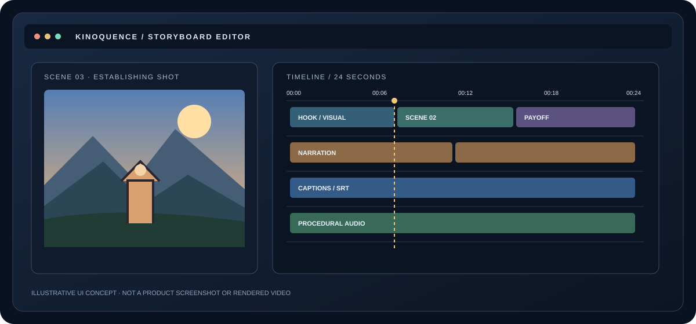

01
Research
Separate facts from interpretation. Attach sources to claims before a script reaches the timeline.
CLAIM MAPPlan with your preferred model. Keep the storyboard portable, build the production layers locally, and carry captions, credits and technical checks with the project.
Illustrative concept visual · not a captured application screen
Model output is only the start. Kinoquence makes every stage editable, traceable and repeatable.
Separate facts from interpretation. Attach sources to claims before a script reaches the timeline.
CLAIM MAPBuild a hook, narrative beats, a visual direction and a realistic speaking pace.
STORY PLANTurn the script into JSON scenes with timing, camera movement, captions and reusable elements.
PORTABLE JSONThe included Remotion source composes editable vector scenes. A fresh dependency install and sample render remain stable-release gates.
LOCAL MP4Create a procedural music bed and SFX, add your own narration and export timed captions.
AUDIO + SRTCheck black spans, freezes, loudness, source records and credits before publishing.
QA REPORTUse a consumer app with the instruction packs, or call the official API through a provider adapter. The video project itself stays model-neutral.
Adapter implemented is not the same as every model tested. Record the exact model ID, endpoint and date in each smoke-test report.
Kinoquence ships with a place to record the information needed to reproduce a result.
Keep the storyboard, prompt, model/version, asset manifest, source map, render settings, captions and QA report next to the video.
This short animation introduces the Kinoquence workflow and project structure. It is not a screen recording or a sample render from the included Remotion renderer.

The overview is original project artwork, not a captured application demo. A genuine end-to-end sample render should be published only after the Remotion build and renderer output have been verified.
Python drives the workflow. Remotion is the local renderer. FFmpeg checks the export. The Remotion build and a real end-to-end MP4 still need release verification.
python -m pip install -e .
kinoquence doctor
kinoquence new projects/my-short
kinoquence validate projects/my-short
kinoquence audio projects/my-short
kinoquence captions projects/my-short